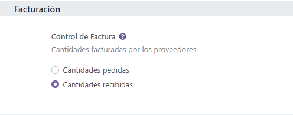
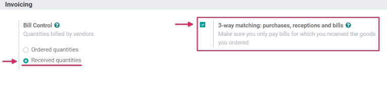
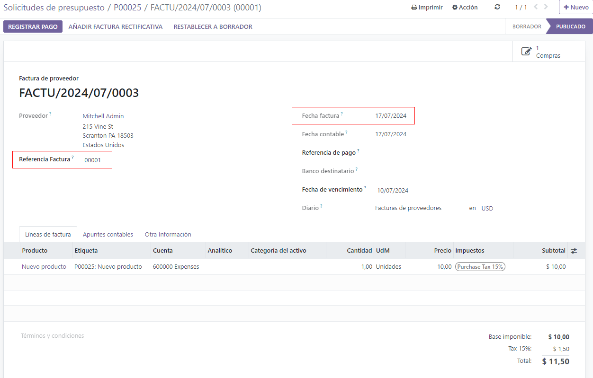
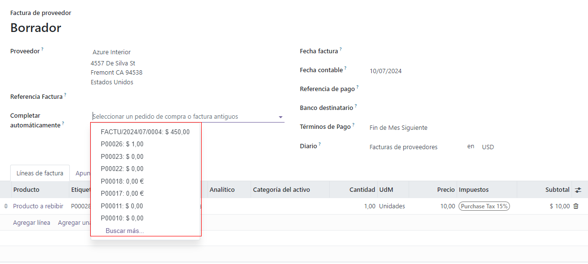
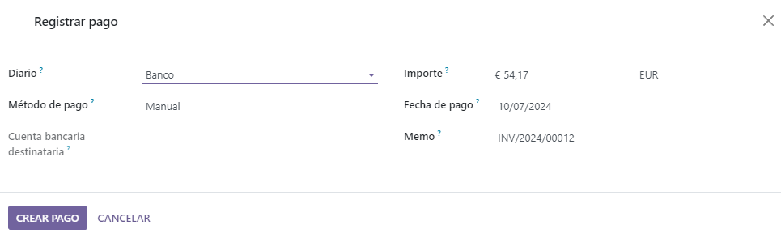

Gestionar facturas de proveedor¶
Una factura de proveedor es una factura que se recibe para bienes y/o servicios que una empresa adquiere de un proveedor. Estas facturas registran todo lo que llega de los proveedores que se debe pagar y puede incluir importes adeudados por lo bienes y/o servicios adquiridos, impuestos sobre las ventas, cargos de transporte, envíos y mucho más.
En Odoo, una factura de proveedor se puede crear en diferentes puntos del proceso de compra, dependinedo de la política de control de facturas configruada en los ajustes de la aplicación Compra.
Políticas de control de facturación¶
Para ver y editar las políticas de control de facturas que están configuradas de manera predeterminada y hacerles cambios, vaya a y baje hasta la sección de Facturación.
Aquí hay dos opciones de políticas: Control de facturas y Cantidades recibidas. Después de seleccionar una política, haga clic en Guardar para guardar los cambios.
La política seleccionada será la que se usará de manera predeterminada para cualquier nuevo producto que cree. La definición de cada política es la siguiente:
Cantidades ordenadas: crea una factura de proveedor en cuanto se confirma una orden de compra. Los productos y cantidades en la orden de compra se usan para generar un borrador de factura.
Cantidades recibidas: se crea una factura solamente después de que una parte o el total de la orden se recibió. Los productos y cantidades recibidos se usan para generar un borrador de factura.
Truco
Si un producto necesita una política de control diferente, la que está configurada de manera predeterminada se puede sobreescribir en la pestaña de Compra en el formulario del producto y modifique el campo de Política de control.
Conciliación de tres vías¶
La función de conciliación de tres vías asegura que las facturas solo se paguen una vez que reciba una parte de (o todos) los productos incluidos en la orden de compra.
Para activarla, vaya a y diríjase a la sección Facturación. Seleccione la casilla ubicada junto a Conciliación de tres vías: compras, recepciones y facturas y haga clic en Guardar.
Importante
La función de conciliación de tres vías solo tiene el propósito de funcionar con la política de control de facturas correspondiente a Cantidades recibidas.
Crear y gestionar facturas de proveedor al recibir productos¶
Cuando se reciben los productos en el almacén de una empresa se crean los recibos. Una vez que la empresa procesa las cantidades recibidas, puede crear una factura de proveedor directamente desde el formulario de recibo del almacén. Dependiendo de la política de control de facturas que eligió en los ajustes, crear una factura de proveedor finalizará en diferentes etapas del proceso de abastecimiento.
Con la política de control de facturas establecida sobre cantidades ordenadas.¶
Para crear y gestionar facturas de proveedor en los recibos usando la política de control de facturas de cantidades ordenadas, vaya a la , baje hasta la sección de Facturación y seleccione Cantidades ordenadas en Control de facturas. Luego, haga clic en Guardar para guardar los cambios.
Luego, vaya a la aplicación y haga clic en Crear para crear una nueva solicitud de cotización. Al hacerlo, aparecerá un formulario de detalles para una solicitud de cotización.
En el formulario de detalles en blanco, agregue un proveedor a la solicitud de cotización en el campo Proveedor y agregue productos a las líneas de Producto haciendo clic en Agregar una línea.
Luego, confirme la solicitud de cotización haciendo clic en el botón de Confirmar orden que está en la parte superior del formulario de detalles. De esta manera, la solicitud de cotización se convertirá en una orden de compra.
Luego, haga clic en el botón de Crear factura para crear una factura de proveedor para la orden de compra.
Al hacer clic en el botón de Crear factura aparecerá una página para el Borrador de factura para la orden de compra.
En el Borrador de factura, haga clic en el botón de Editar para modificar la factura y agregue una fecha de facturación en el campo de Fecha de factura. Si es necesario, agregue productos adicionales en las líneas de Producto haciendo clic en Agregar línea en la pestaña de Líneas de facturación.
Luego, confirme la factura haciendo clic en el botón de Confirmar en la página del Borrador de factura.
Truco
Puesto que la política de control de facturas está establecida en cantidades ordenadas, el borrador de factura se puede confirmar tan pronto como se crea antes de que haya recibido los productos.
En la nueva Factura de proveedor agregue un número de Referencia de factura que puede usarse para conciliar la factura con documentos adicionales (como la orden de compra). Luego, haga clic en . Al hacerlo, aparecerá una ventana emergente dónde puede escoger un Diario de pagos, un Método de pago y una Cuenta bancaria receptora desde un menú desplegable.
Además, la Cantidad, la Fecha de pago y el Memo (Número de referencia) de la factura se pueden cambiar desde esta ventana emergente. Una vez que esté listo, haga clic en Crear pago para finalizar la creación de una Factura de proveedor. Al hacerlo, aparecerá un panel de color verde que dirá En proceso de pago en el formulario de la solicitud de cotización.
Con la política de control de facturas establecida sobre cantidades recibidas¶
Advertencia
Si intenta crear una factura de proveedor sin haber recibido ninguno de los productos (mientras tiene establecida la política de control de facturas en cantidades recibidas), aparecerá un mensaje de error y debe cambiar los ajustes antes de continuar.
Para crear y gestionar facturas de proveedor en los recibos usando el control de políticas de facturas sobre cantidades recibidas vaya a la , baje hasta la seccion de Facturación y seleccione Cantidades recibidas en el Control de facturas. Luego, haga clic en Guardar para guardar los cambios.
Luego, vaya a la aplicación y haga clic en Crear para crear una nueva solicitud de cotización. Al hacerlo, aparecerá el formulario en blanco de detalles para una solicitud de cotización.
En el formulario de detalles en blanco, agregue un proveedor a la solicitud de cotización en el campo Proveedor y agregue productos a las líneas de Producto haciendo clic en Agregar una línea.
Luego, confirme la solicitud de cotización haciendo clic en el botón de Confirmar orden que está en la parte superior del formulario de detalles. De esta manera, la solicitud de cotización se convertirá en una orden de compra.
Finalmente, haga clic en el botón de Crear factura para crear una factura para la orden de compra.
Nota
Hacer clic en Crear factura antes de recibir los productos, aparecerá una ventana emergente con un mensaje de Error de usuario. La Orden de compra requiere que reciba por lo menos una parte de los artículos incluidos en la orden para crear la factura de proveedor.
Luego, haga clic en el botón inteligente de Recepción para ver el formulario de recepción del almacén.
En el formulario de recepción del almacén, haga clic en para marcar las cantidades como Recibidas. Luego, regrese a la (a través de las migas de pan) y haga clic en el botón de Crear factura en el formulario de la orden de compra.
Al hacerlo, aparecerá el Borrador de factura para la orden de compra. En el Borrador de factura, haga clic en el botón de Editar y agregue una Fecha de factura. Si es necesario, agregue productos adicionales a las líneas de Producto haciendo clic en Agregar línea.
Luego, haga clic en el botón de Confirmar para confirmar el Borrador de factura.
Nota
Puesto que la política de control de facturas está establecida en cantidades recibidas, el borrador de factura solamente se puede confirmar cuando reciba por lo menos una parte de las cantidades que ordenó.
En la nueva Factura de proveedor agregue un número de Referencia de factura que puede usarse para conciliar la factura con documentos adicionales (como la orden de compra). Luego, haga clic en . Al hacerlo, aparecerá una ventana emergente dónde puede escoger un Diario de pagos, un Método de pago y una Cuenta bancaria receptora desde un menú desplegable.
Además, puede cambiar el Importe, la Fecha de pago y el Memo (Número de referencia) desde esta ventana emergente. Una vez que todo esté listo, haga clic en Crear pago para terminar de crear su factura de proveedor. Al hacerlo, aparecerá un panel de color verde que dice En proceso de pago en el formulario de la solicitud de cotización.
Crear y gestionar facturas de proveedor desde Contabilidad¶
Las facturas de proveedor también se pueden crear directamente desde la aplicación Contabilidad de Odoo, sin tener que crear primero una orden de compra. Para hacerlo, vaya a la y haga clic en Crear. Al hacerlo, aparecerá el formulario en blanco para los detalles de una factura de proveedor.
En este formulario vacío de detalles de la factura de proveedor, agregue un proveedor en el campo Proveedor y agregue productos en las líneas de producto (en la pestaña Líneas de factura). Haga clic en Agregar una línea, luego agregue una fecha de factura en el campo Fecha de factura y cualquier otra información necesaria. Por último, haga clic en Confirmar para confirmar la factura.
Desde aquí, haga clic en la pestaña de Apuntes contables para ver (o cambiar) los diarios Contables que se llenan con base en la configuración correspondiente de los formularios de Proveedor y Producto.
Luego, haga clic en Agregar nota de crédito o Agrega una nota de débito para agregar notas de crédito o débito a la factura. O, agregue un número de Referencia de factura (mientras está en el modo Editar).
Cuando todo esté listo, haga clic en para finalizar la Factura de proveedor.
Truco
Para conciliar una factura de proveedor con una orden de compra ya existente, haga clic en el menú desplegable que está junto a Completar automáticamente y seleccione la orden de compra en el menú. La factura se llenará automáticamente con la infromación de la orden de compra.
Facturación por lotes¶
Las facturas de proveedor se pueden procesar y gestionar por lotes desde la aplicación Contabilidad.
Para hacerlo, vaya a la . Luego, haga clic en la casilla que está en la parte superior izquierda de la página junto a la columna de Número, en el botón Crear. Esto selecciona todas las facturas de vendedor existentes en Estado de Publicado o Borrador.
Desde aquí, haga clic en el ícono de engranaje de Acción para exportar, eliminar o enviar e imprimir las facturas. Haga clic en el ícono de Imprimir para imprimir las facturas o haga clic en Registrar Pago para crear y procesar los pagos para múltiples facturas de proveedor de una sola vez.
Cuando seleccione la opción Registrar pago aparecerá una ventana emergente. En esta ventana, seleccione el diario correspondiente en el campo de Diario, elija una fecha de pago en el campo de Fecha de pago y un Método de pago. También tiene la opción de Agrupar pagos desde esta ventana.
Cuando esté listo, haga clic en el botón de Crear pago, el cual crea una lista de asientos contables en una página por separado. Está lista de asientos contables está conciliada con su factura de proveedor correspondiente.
Nota
La opción de Registrar pago para las facturas de proveedor por lotes solo funcionará para los asientos contables en Estado de Publicado.
Ver también